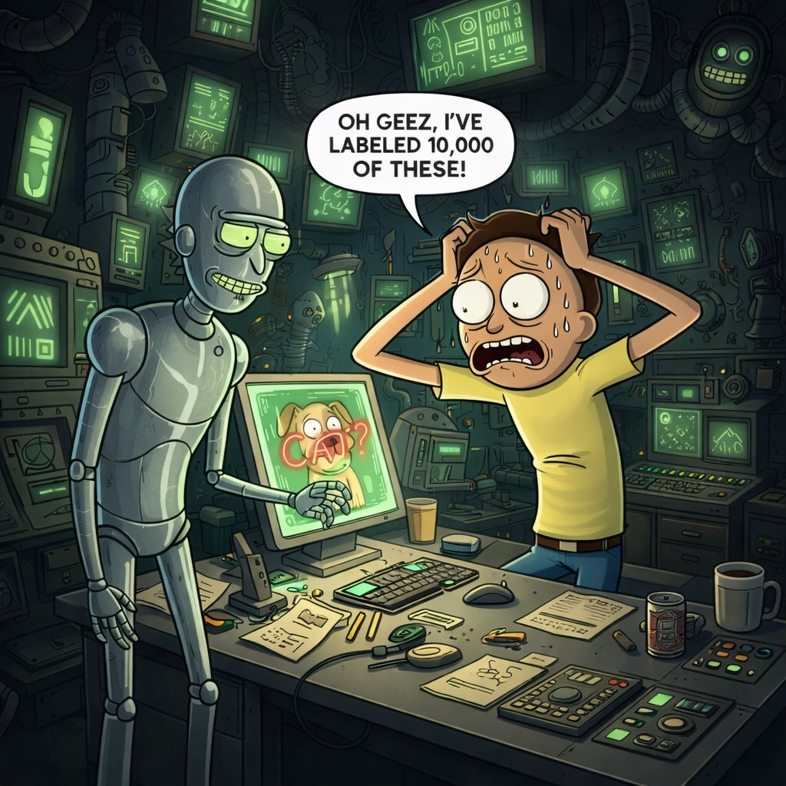

"Human in the Loop
= Rubber Stamping"
You're just approving what it already knew
The AI processes thousands of items. You review the flagged ones. You approve most of them — the model is almost always right. Your job is essentially to confirm what the system has already decided. You're the checkmark at the end of a pipeline that has already done its work. The AI does the thinking; you provide the sign-off.
This framing treats accuracy as the only dimension of quality — and uses the AI's own standard to measure it. When you ask "is the AI usually right?" you're already inside a frame the AI has constructed. The question assumes there's a correct answer, that the AI knows what it is, and that the human's job is to confirm or deny that assessment.
But human reviewers often catch something different: not errors the AI made against a known standard, but errors the AI made against reality. The model may be consistent, internally coherent, and confident — and still be consistently wrong about something the model was never trained to notice.
What's true insteadHuman reviewers in well-designed loops aren't confirming accuracy against the model's internal standard. They're injecting a different kind of knowing — contextual, embodied, culturally situated, ethically attentive. The human's job is not to approve what the AI found. It's to ask whether what the AI found is the right thing to look for.
That's not rubber stamping. That's epistemology.
"I used to think if the AI was right 94% of the time, I should just trust it. Then I asked: right by whose standard? Right compared to what? And then it got interesting."Percy
"Human in the Loop
= Backup Plan for Bad AI"
Humans are temporary gap-fillers
Right now the AI isn't good enough to fully automate this. So we keep humans in the loop as a stopgap — to catch mistakes, handle edge cases, do the things the model can't yet do reliably. But eventually, as the model improves, we'll be able to remove the human. The loop is a transitional state. The destination is the human-free pipeline.
This narrative positions human judgment as a temporary workaround for machine inadequacy. It implies that there exists a future state — when the AI is "ready" — in which human oversight becomes unnecessary. But this conflates two different things: the AI getting better at a specific task, and that task being the right one to automate without oversight.
Some loops exist not because the AI is imperfect, but because the decision at the heart of the loop requires human accountability. A more capable AI doesn't dissolve the accountability question — it makes it more urgent. The more reliably an AI system acts, the harder it becomes to assign responsibility when something goes wrong.
What's true insteadThe "backup plan" framing treats human oversight as friction to be minimized. A more accurate view is that human involvement in consequential AI decisions is a feature, not a workaround — not because humans are more accurate, but because they are the bearers of moral responsibility in a way systems are not. When we remove the human from decisions that affect other humans, we don't solve the oversight problem. We simply make it invisible.
"Every time someone says 'we'll remove the human when the AI is ready,' I want to ask: ready to do what, exactly? And who decides when it's ready? Usually the answer is: another AI. That's not a loop. That's a closed system."Ray
"Human in the Loop
= The Human Is in Charge"
Control without visibility isn't control
The human reviews the AI's decisions before they're finalized. The human can override, reject, modify. There's a button you can press to stop things. The human is in the authoritative position — they approve or deny. If the human is in the loop, the human is in control. The system does what the human says.
Control is not just about formal authority. It requires visibility, comprehension, time, and real alternatives. A human reviewer who has been presented with pre-selected outputs, stripped of context, given thirty seconds to evaluate, and offered only binary options — approve or reject — does not have control in any meaningful sense. They have a veto. These are not the same thing.
What the AI surfaces for review is itself a choice the AI has made. The human sees what the system decided to show. The rest — the cases that weren't flagged, the patterns across thousands of similar decisions, the training dynamics that shaped the model's behavior — remain entirely opaque. Reviewing the visible slice of the pipeline is not the same as overseeing the pipeline.
What's true insteadGenuine human control requires: access to the full decision context, including what wasn't surfaced for review; time and conditions that permit thoughtful evaluation; access to alternative options, not just binary approval; and feedback mechanisms that allow the human's judgment to shape future system behavior. "The human approved it" is only meaningful if the human could meaningfully have done otherwise.
"I once flagged fifty outputs in a row as 'unclear — cannot evaluate.' My supervisor asked if I was having a bad day. I said no, I think the interface is hiding something. Turned out I was right."Manny
"I'm Just One Human
in Millions of Loops"
Individual judgment disappears into aggregate
Any single annotation I make is statistically irrelevant. The model trains on millions of examples. My one label is a grain of sand. If I'm uncertain, it doesn't matter — the majority will carry the weight, and my individual deviation will be averaged out. My judgment is too small to matter at this scale. Individual care is a kind of vanity when the aggregate is what counts.
This argument proves too much. By the same logic, no single reviewer's judgment matters, which means no reviewer's judgment matters, which means the whole review layer is meaningless — which is clearly false. The fallacy is treating the individual contribution as irrelevant because it's small, rather than as essential because it's one instance of the thing the whole system depends on.
More specifically: the edge cases, the unusual items, the genuinely ambiguous outputs — these are exactly the areas where aggregation fails. Majority votes don't resolve genuine ambiguity; they bury it. The individual reviewer who notices that something is wrong is not generating noise. They are generating signal that the majority mechanism will suppress if no one speaks up.
What's true insteadAt scale, what each human brings to the loop isn't just a data point — it's a potential catch. The value of having a human in the loop is specifically the human's capacity to notice things that are outside the AI's model of what matters. That capacity lives in individuals. Aggregation can amplify human signal, but it cannot create it. The person who hesitates in front of an ambiguous item and marks it uncertain is doing more valuable work than the person who quickly agrees with the majority.
"The most useful thing I ever did as an annotator was refuse to agree with the majority on a batch of items I thought were genuinely ambiguous. My supervisor told me I was creating variance. I said: yes. That's what I'm here to do."Ash
"Human in the Loop
= Slowing Things Down"
Speed is not a neutral metric
Human review introduces latency. The AI can process in milliseconds; human review takes minutes, hours, sometimes days. Every second a human spends reviewing is a second the system isn't acting. The faster we can review — or the fewer items we require review on — the more efficient the overall system becomes. Speed is the optimization target; humans are the bottleneck.
This framing treats speed as a neutral, self-evidently good metric. But speed toward what end? The efficiency argument assumes that faster execution of the AI's current behavior is the goal. It doesn't ask whether the current behavior is the right behavior, or whether some of the cases being processed quickly should be processed differently, or not at all.
When review time is optimized without adjusting what counts as a good review, reviewers respond predictably: they review faster. Faster review means less careful review, which means more errors propagate downstream — quietly, at scale, with human sign-off. The system becomes faster and less accurate in ways that are hard to detect, because the humans are still technically in the loop.
What's true insteadThe time a thoughtful human spends on a difficult case is not waste. It's the cost of the thing that makes human review valuable. A review process optimized purely for throughput has, by definition, removed the element that justified having humans in the loop. Speed metrics in human review systems tend to measure the wrong thing — they reward throughput while penalizing the slow, careful attention that catches the problems you actually care about catching.
"I kept getting scored on review time. So I started going faster. My accuracy stayed the same but I stopped catching the interesting edge cases. I was optimizing for the metric, not the mission."Sage
"Human in the Loop
= Keeping AI Honest"
Individual review ≠ systemic oversight
Because humans are reviewing the AI's outputs, the AI is being held accountable. Human presence in the review process means there's a check on the system — someone is watching, someone can catch problems, someone is there to ensure the AI doesn't go off the rails. The loop is the accountability mechanism. As long as there's a human in the loop, the system is being overseen.
Individual output review is not the same as systemic oversight. A person reviewing individual AI outputs can catch item-level errors. They generally cannot detect pattern-level problems — systematic biases, slow drifts in behavior, emergent failure modes that only become visible across thousands of decisions. These require a different kind of attention: not item review, but behavioral analysis, aggregate monitoring, adversarial testing, and comparison against external standards.
The human in the loop is almost always looking at individual outputs. The things that most need oversight — the training process, the evaluation methodology, the deployment conditions, the feedback loops — are usually not visible to individual reviewers and are often not being reviewed by anyone in a systematic way.
What's true insteadOversight of AI systems requires multiple layers: individual review for item-level errors; aggregate monitoring for behavioral patterns; independent audit for systemic biases; institutional accountability for deployment decisions; and public transparency for high-stakes applications. Having humans in the loop addresses one of these. It does not address the others. A system with humans in the loop and no other oversight mechanisms is not being overseen — it is being observed. These are very different.
"People say: well, humans are in the loop, so it's fine. I always ask: which humans? Doing what? With access to what information? Under what time pressure? The answer is usually: very specific humans, reviewing very specific things, quickly, with incomplete context. That's not oversight. That's theater."Gen
A Note Before You Begin
The human as a signal generator
These misconceptions share a common structure. Each one takes something real — the AI's high accuracy, the possibility of future improvement, the human's formal authority, the aggregate scale of labeled data, the efficiency of automation, the presence of review processes — and uses it to reach a conclusion that flatly contradicts what actually happens when careful humans engage carefully with AI outputs.
What the misconceptions erase, in every case, is the specific quality of human judgment: its contextual depth, its situational awareness, its capacity for principled disagreement, its embeddedness in accountability structures that extend beyond the interface. Human judgment is not just a computation that happens to be slower and less consistent than the AI's. It is a different kind of thing, doing a different kind of work, grounded in a different kind of knowledge.
The phrase "human in the loop" is valuable only to the extent that the humans in the loop are in a position to actually exercise judgment — with access to context, with time to think, with the ability to disagree, with feedback mechanisms that let their disagreement matter. Where those conditions are absent, the phrase is doing ideological work: it is providing the reassurance of human oversight without the substance of it.
The six misconceptions in this pamphlet are not arguments for removing humans from AI pipelines. They are arguments for taking seriously what it means to have a human there. Signal only travels when the circuit is real.
"None of these misconceptions are stupid. They all come from something real — a genuine observation about how these systems work, a reasonable inference from limited information, a pragmatic conclusion that made sense in context. You're not wrong to notice these things. You're wrong to stop there."Maya